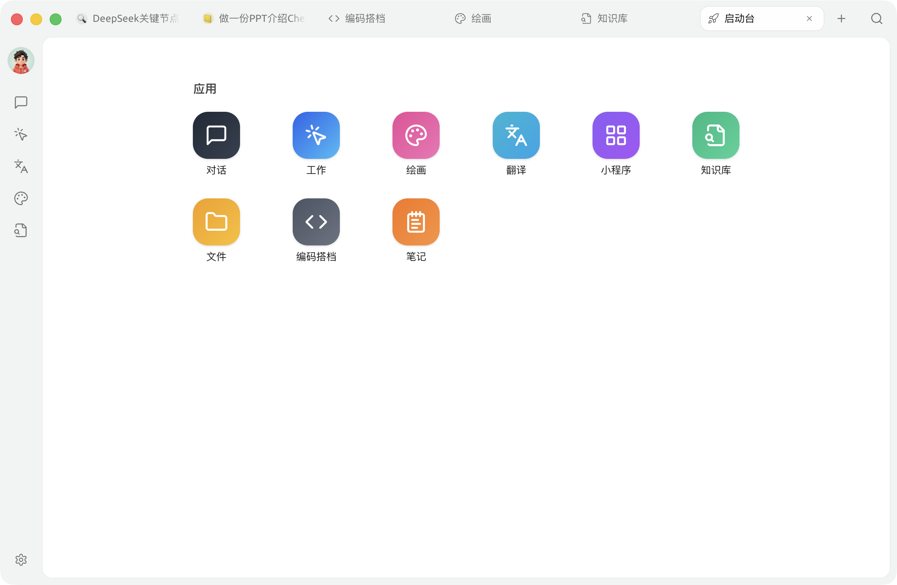
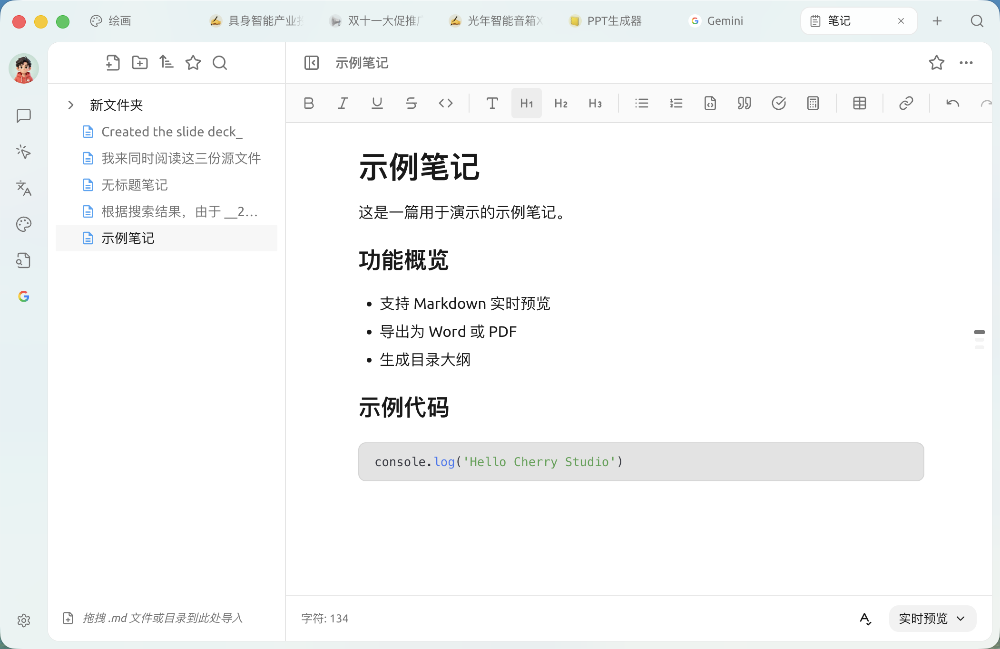

Cherry Studio 深度盘点：这款 AI 客户端到底把多少事搬进去了
从多模态对话、文件直拖到内置笔记和 MCP 扩展，全面拆解 Cherry Studio 的能力边界、亮点设计与适用人群。
开头：为什么要认真盘点 Cherry Studio
AI 客户端这条赛道近两年挤得满满当当。随便搜一下就能列出一串名字——有些主打模型聚合，有些专注工作流，有些做移动端入口。Cherry Studio 在里面的定位挺特别的：它不是又一个"接 API 的聊天窗口"，而是试图把 AI 嵌进日常工作流的各个节点里，让它不只是"回答你问题"，而是真的帮你做点事出来。
这个定位决定了它的功能矩阵会比纯聊天类客户端重得多。从多模态对话到文件即插即用，从内置笔记工作台到 MCP 生态扩展，每一块都不是装饰性功能，而是瞄准了一个具体的高频场景。下面就按能力域逐个拆。

能力域一：多模态对话——对话不再局限于文字框
传统 AI 客户端的交互是文字单行道：你输入问题，它输出答案。2024 年后主流模型陆续支持了多模态输入，Cherry Studio 第一时间把图像理解和语音交互接进来，而且做得相当彻底。
图像理解这块，支持的模型覆盖了 GPT-4o、Claude 3.5 Sonnet、Gemini 1.5 Pro 等主流选项。实际使用体验上，截图问答、图表解读、设计稿反馈这些场景跑起来都挺顺。它会自动判断模型能力——支持多模态的模型直接走像素级理解，不支持的自动退回 OCR 路径，用户不用手动切换。这一点细节做得不错，省了不少心智负担。
语音交互的覆盖面稍窄一些，只有 GPT-4o 和 Gemini 系列支持，但足够日常通勤时用。输入框旁一个麦克风按钮，点一下录音，说完停止，自动转文字发出去。模型回答完了，回复旁边还有扬声器按钮能让 AI 读出来——听长文总结的时候确实能解放双手。
一个有意思的设计是，多模态图像理解和文件直接对话（见下文）是两条不同的路径：图片拖进支持多模态的模型，走的是模型直接看像素；拖进纯文本模型，自动走 OCR 识别。两种方式各有适用场景，软件不替你做判断，而是按模型能力自动路由。去官网逛一眼就能看到多模态模型的完整支持列表。
能力域二：文件即插即用——把 PDF 丢给 AI 这件事终于做对了
日常工作里最烦的一件事：手里一份 50 页 PDF 合同要审，或者一份 100 页技术文档要总结，传统做法要么自己硬翻，要么复制粘贴几段到 AI 里——前者耗时间，后者丢上下文。
Cherry Studio 的解法很直接：把文件拖进对话窗口就行。支持的格式覆盖了 PDF、Word、Excel、PPT、Markdown、TXT 以及各种代码文件，上限 20MB。文件会被自动抽取正文内容，和你的问题一起发给模型。
实际跑起来效果怎么样？合同审校、技术文档总结、Excel 数据分析这三类高频场景表现最稳定。比如拖一份合同 PDF，问"帮我找出对我方不利的条款"，AI 会逐段扫过去给你标注出来——比自己翻要快得多。Excel 表格支持按 sheet 抽取数据，问"上个月华东区销量最高的前 3 个产品"这种问题，模型能准确对应到表格里的单元格。
它还明确区分了两种用法的场景：对话里直接拖文件适合一次性处理，用完就走；长期要用到的文档（比如公司规范、产品手册）应该丢进知识库做向量化归档，之后任何对话都能检索到。这个区分虽然简单，但很多 AI 客户端要么只做了前者，要么只做了后者，没把两条路都铺好。
能力域三：内置笔记工作台——AI 能理解的笔记本
在 AI 客户端里顺手做笔记是个挺隐蔽但极高频的需求：聊完一段对话想整理成文档、灵感闪现想立刻记下来、和 AI 共创了一篇长文想保存。如果每次都要切到 Obsidian 或 Notion，打断工作流的频率太高了。
Cherry Studio 内置了一个完整的 Markdown 编辑器，不是凑数的那种。支持实时预览、源码模式、阅读模式三种视图切换，有富文本快捷工具栏（粗体、斜体、标题、列表、代码块、引用、表格、公式都齐了）。左侧侧栏是目录树，支持新建文件夹、排序、收藏、搜索。还能把本地 .md 文件或包含 md 的目录直接拖进笔记区域批量导入——迁移成本很低。
真正的亮点在右键菜单的 AI 联动。写完笔记后右键有几个实用的 AI 入口：✨ 生成笔记名称（解决"写完不知道叫什么"的常见困扰）、导出笔记到知识库（向量化归档后所有挂了这个知识库的助手都能检索到你的笔记内容）。导出格式也很全——Markdown、Word、Notion、语雀、Obsidian、Joplin、思源，甚至可以复制为图片。

笔记内容存储在本地文件系统里，默认路径在应用数据目录下，也可以自定义路径换到别的盘。配合 WebDAV 或 S3 兼容存储做跨设备备份，整个笔记体系就闭环了。安装包直接从下载拿就行。
能力域四：MCP 生态扩展——让 AI 真正动手调外部工具
如果说前面三个能力域还是"AI 在 Cherry Studio 内部帮你做事"，那 MCP 扩展就是把 AI 的手伸出去了。
MCP（Model Context Protocol）是一套让 AI 调用外部工具的协议，类比浏览器上的 HTTP，但专门为 AI 设计。Cherry Studio 原生支持 MCP，挂载一个 MCP Server 后，Agent 就能在任务执行过程中自动调用它暴露的工具——查飞书日历、搜 GitHub issue、抓网页内容、调 API 查数据库记录，这些原本需要手动切换 App 的操作，现在可以在 Agent 里串起来。
接入方式很灵活：npm 包形式的 Server 用 npx 自动启动，自己开发的 Python / Go Server 用 command 启动，云端或团队共享的 Server 走 HTTP / SSE 远程连接。Agent 调用 MCP 工具的过程对用户是透明的，但开启开发者模式后能看到完整的调用链——Agent 决定调哪个工具、传了什么参数、工具返回了什么结果。具体的配置步骤在文档里有详细说明。
一个值得注意的设计是，MCP 工具和内置工具（文件读写、终端执行、网页抓取）在 Agent 看来是平级的。内置工具覆盖本地操作，MCP 工具覆盖外部系统交互，Agent 根据任务需要自己选。这个架构让扩展性很好，不会因为加了 MCP 就跟内置能力打架。
安全方面也做了考虑：每个 MCP Server 有独立的权限范围，敏感操作类的 Server 会提醒谨慎挂载。逐次确认模式下，Agent 每次要调 MCP 工具都会弹框问你——这对不信任第三方 MCP Server 的用户来说是个很好的安全阀。
短板也要说
说了这么多亮点，客观上 Cherry Studio 也有几个值得注意的局限。
语音交互覆盖不全。只有 GPT-4o 和 Gemini 系列支持语音输入输出，其他主流模型（Claude 3.5 Sonnet、DeepSeek V3 等）要么只支持图像理解，要么纯文本。依赖 Claude 做主力模型的用户，语音这块基本用不了。
文件大小限制。对话里直接拖的文件上限是 20MB（PDF/Word/Excel/PPT），图片上限 5MB。超大文档或高分辨率图片会被截断，这种场景还是得走知识库分块向量化的路径，不能指望直接拖就搞定。
知识库和 MCP 配置门槛偏高。知识库创建需要先建一个（支持本地目录或外部数据源），然后等向量化完成才能用——这个等待时间取决于文档数量。MCP Server 的挂载需要手动编辑配置或填启动参数，对不熟悉 npx、command 行参数的用户来说，初期配置成本不低。
笔记体系相对独立。内置笔记不能直接和对话历史互转——想把某段对话变成笔记，得手动复制或者用 AI 帮你整理后再粘贴。这个"AI 联动"还是半自动的，不是一键无缝。
什么样的人该用它
最后画个画像，帮助判断 Cherry Studio 是否适合自己。
第一类：AI 重度使用者。如果你日常和 AI 对话的频率很高，而且经常在不同模型间切换、需要把 AI 接入各种外部工具，Cherry Studio 的多模型聚合 + MCP 扩展 + 文件即插即用这一套组合拳能帮你省掉大量切换成本。尤其是需要让 AI 跨工具串流程的场景（比如"查完 GitHub issue 把结果整理成笔记再导出到知识库"），Agent 模式加 MCP 是目前少有的能在桌面端顺畅跑通这套流程的方案。
第二类：知识密集型岗位从业者。产品经理、研究员、内容创作者——这类人手里总是堆着一堆待审的文档、待分析的数据。文件直接对话加内置笔记工作台的组合，相当于在 AI 客户端里塞了一个轻量级的知识管理系统。写完笔记一键导出到知识库，之后任何对话都能检索到，知识沉淀这件事从"手动整理"变成了"用着用着就自动沉淀"。
第三类：对本地存储有洁癖的用户。Cherry Studio 的对话历史、笔记、文件都存在本地，不会强制同步云端。如果加上 Ollama 本地模型和 WebDAV 备份，整个工作流的数据完全不出自己的设备——这对隐私敏感用户来说是个不小的加分项。
这套能力矩阵从多模态对话、文件即插即用、内置笔记到 MCP 扩展，覆盖了 AI 使用中从输入到沉淀再到扩展的完整链路。如果你在找一个不满足于"聊天"的 AI 客户端，可以去它的官网看看，下载一个试试上手体验。入门阶段先用内置的常用模型跑起来，后面有需求了再接知识库和 MCP，整个过程的学习曲线虽然有点陡但逻辑还算顺。
需要补充的一点是，它的数据完全本地存储，如果担心云端同步问题可以搭配 Ollama 本地模型和 WebDAV 备份来构建离线工作流。文档维护同步在三个代码仓库——GitHub 主仓、Gitee 国内镜像、GitCode 备份，找的时候选一个访问顺畅的就行。